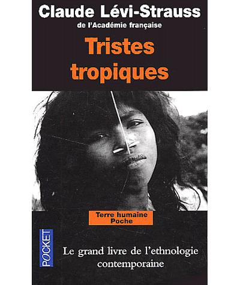

Federico Volonteri
Full Stack Engineering Student @Le Wagon
Currently completing my skills by learning new technical capabilities to land a job in the tech industry
My Favorite Books

|
East of EdenEast of Eden is a novel by Nobel Prize winner John Steinbeck, published in September 1952. Often described as Steinbeck's most ambitious novel, East of Eden brings to life the intricate details of two families, the Trasks and the Hamiltons, and their interwoven stories. The novel was originally addressed to Steinbeck's young sons, Thom and John (then 6½ and 4½ years old, respectively). Steinbeck wanted to describe the Salinas Valley for them in detail: the sights, sounds, smells, and colors. |
|  |
Tristes TropiquesCet ouvrage est un témoignage sur les voyages de Lévi-Strauss et sur son travail anthropologique. Lévi-Strauss se réfère principalement à ses séjours au Brésil mais il décrit aussi ceux qu'il a faits dans d'autres pays (comme l'Inde ou le Moyen-Orient). En outre, bien qu'il soit assimilable à la tradition des récits de voyage philosophiques, le livre est parsemé de réflexions philosophiques et d'idées venant de différentes disciplines comme la sociologie, la géologie, la musique ou la littérature. |